Lesson 1 · Part 1 · The model · 5 questions
Tokens and the context window
Read first: How this course works
A model never sees your text as letters or words. It sees tokens: small pieces of text, each turned into a number. Prices, limits and the size of the model's working memory are all counted in tokens, so knowing what makes text "expensive" tells you where an agent's money and memory go.
The idea
Think of how you read a familiar word: you don't spell it out, you see it whole. A rare surname you read in chunks. A model does something similar, but more strictly. Before it reads anything, a program called the tokenizer cuts the text into pieces from a fixed vocabulary of tens of thousands to a few hundred thousand pieces. Common words are one piece. Rare words, names and IDs are cut into many small pieces.
- Split. The tokenizer cuts the text into known pieces. Each piece is a token.
- Number. Each token becomes a number, its position in the vocabulary. The model only ever sees these numbers.
- Read, then write. The model reads all the tokens you send (input tokens), then writes its reply one token at a time (output tokens).
- Fit. Everything has to fit in the context window: the most tokens the model can handle in one request, counting both what you send and what it writes back.

Two English words cost one token each. The 8-character ID costs 9 (with the space). That is the whole lesson in one line: familiar text is cheap, random text is expensive.
Up close
How big is a token? OpenAI's rule of thumb for English is about 4 characters, or ¾ of a word, per token: 100 tokens ≈ 75 words. Tokenizers differ, though. Anthropic says a token was about 3.5 English characters on its older models, and that Claude Opus 4.7 and later use a new tokenizer that makes about 30% more tokens from the same text. So a rule of thumb is a rough guess. For a real number, count with the model you will use.
Why everything is priced in tokens. The model's work grows with the number of tokens it reads and writes, not with characters or requests. So the API bills input and output tokens separately, and output costs more. On Anthropic's price list, output tokens cost 5 times as much as input tokens on every current model (for example, Claude Sonnet 5.5 is $2 per million input tokens and $10 per million output tokens). Why writing costs more is the subject of Reading fast, writing slow.
The context window is the model's whole working memory. The model remembers nothing between requests. What it "knows" in a session is exactly what is in the window: the tool list, the system prompt, your context files, every message, every tool result, and the reply it is writing. Recent Claude models have a 1-million-token window. If what you send is already bigger than the window, the API refuses the request with a "prompt is too long" error. It does not quietly drop old messages for you; the harness (the program running the agent) has to make room.

Counting tokens with the API. Anthropic has a free endpoint that counts the input tokens of a request without running it. It takes the same fields as a normal request. The answer is an estimate, but a close one:
import anthropic
client = anthropic.Anthropic()
path = "orders/service.py"
text = open(path).read()
r = client.messages.count_tokens(
# count with the model you use:
# tokenizers differ
model=MODEL,
messages=[{
"role": "user",
"content": text,
}],
)
print(path, r.input_tokens)Other providers have their own counters. OpenAI publishes its tokenizers as an open-source library, tiktoken, so you can count offline.
Worked example
Here is some typical text, counted with OpenAI's open o200k_base tokenizer. Other tokenizers give different numbers, but the pattern is the same:
| Text | Chars | Tokens | Chars per token |
|---|---|---|---|
| English sentence about retries | 98 | 20 | 4.9 |
| Python retry function | 163 | 39 | 4.2 |
| One JSON log line with IDs | 226 | 116 | 1.9 |
| A UUID | 36 | 36 | 1.0 |
Ordinary code is nearly as cheap as English: return, except and four-space indents are all common pieces. Timestamps, trace IDs and UUIDs are not, so they fall apart into single characters. A log line costs more than twice as much per character as prose.
Language matters too. "The quick brown fox jumps over the lazy dog." is 10 tokens. The same sentence in Russian is 20, and in Japanese 20, even though the Japanese has fewer than half the characters. A NeurIPS 2023 study by Petrov and colleagues found that the same text translated into different languages can need up to 15 times more tokens. Those languages pay more per message and fill the window faster.
Your turn
Question 1 · ~2 min
A model that writes working Kafka consumers tells you "strawberry" has two r's. How can it be good at code and bad at this?
Show answer
It never sees the letters. In "How many r's in strawberry?", the word " strawberry" (with its leading space) is a single token in OpenAI's o200k_base tokenizer, for example: one number. To count letters, the model must have learned how each token is spelled, which it only picks up indirectly. Models have got better at this, but the cause is the same. To get it right, ask it to spell the word out one letter per line first, or to run a line of code. Then each letter is its own token.
Question 2 · ~2 min
You give your agent a 200 KB JSON log from a failing service. Using "4 characters per token", you expect about 50,000 tokens. The session's token count jumps by about 100,000. Why?
Show answer
Logs are full of strings that aren't in the tokenizer's vocabulary. Timestamps, trace IDs, span IDs and UUIDs split into one or two characters per token, and the quotes and braces around each field add more. A JSON log can easily be 2 characters per token, not 4. Filter before the agent reads it: grep the error lines, or jq the few fields that matter.
Question 3 · ~2 min
To change 3 lines in an 800-line file, your agent writes the whole file out again instead of making a small edit. What does that cost you?
Show answer
Thousands of output tokens instead of a few dozen. Output is the expensive kind (5 times the input price on Anthropic's list), and it is written one token at a time, so it is slow too. A small edit costs almost nothing. Prefer tools and prompts that produce edits or diffs, not whole files.
Question 4 · ~3 min
A long agent session keeps growing: files, test runs, logs. It finally gets bigger than the model's context window. What happens next?
Show answer
The API refuses the request with a "prompt is too long" error. It doesn't forget old messages on its own. The harness must make room first. Coding agents do this by compaction: summarising older parts of the conversation when it gets close to the limit. The summary is shorter than what it replaces, so details from early on can be lost. That is one reason a fresh session for a new task often works better.
Question 5 · ~3 min
Stretch: your team measured its agent's system prompt at 40,000 tokens. After moving to a newer model with the same price per token, the bill for the same work goes up noticeably. Nothing in the prompt changed. Why?
Hint
Show answer
The new model has a different tokenizer. The same text can become more tokens. Anthropic, for example, says its tokenizer from Claude Opus 4.7 onwards makes about 30% more tokens from the same text than the one before. Same price per token, more tokens, bigger bill. Token counts belong to a model, not to a text, so recount when you switch.
Interesting fact: The word GPT couldn't say
In January 2023, Jessica Rumbelow and Matthew Watkins were studying GPT-3's vocabulary of 50,257 tokens and found a cluster of strange ones, such as " SolidGoldMagikarp", " petertodd" and "StreamerBot". When asked to simply repeat " SolidGoldMagikarp", the models replied "distribute". Other tokens got answers like "I can't hear you" or outright insults. Their best explanation: the vocabulary was built from scraped web text that probably included Reddit threads, shop back-ends and game logs, but the models were trained on cleaner text. So these tokens existed, yet the models had almost never seen them used, and didn't know what to do with them. About a week after their post, ChatGPT appeared to have been patched, and "glitch tokens" became a research topic of their own.
Facts checked: November 2026 (Anthropic API docs: token counting, context windows, pricing; Claude Code docs; OpenAI's token guide; Petrov et al., NeurIPS 2023; Rumbelow and Watkins, 2023).
Answers
- Question 1
It never sees the letters. In "How many r's in strawberry?", the word " strawberry" (with its leading space) is a single token in OpenAI's
o200k_basetokenizer, for example: one number. To count letters, the model must have learned how each token is spelled, which it only picks up indirectly. Models have got better at this, but the cause is the same. To get it right, ask it to spell the word out one letter per line first, or to run a line of code. Then each letter is its own token. - Question 2
Logs are full of strings that aren't in the tokenizer's vocabulary. Timestamps, trace IDs, span IDs and UUIDs split into one or two characters per token, and the quotes and braces around each field add more. A JSON log can easily be 2 characters per token, not 4. Filter before the agent reads it:
grepthe error lines, orjqthe few fields that matter. - Question 3
Thousands of output tokens instead of a few dozen. Output is the expensive kind (5 times the input price on Anthropic's list), and it is written one token at a time, so it is slow too. A small edit costs almost nothing. Prefer tools and prompts that produce edits or diffs, not whole files.
- Question 4
The API refuses the request with a "prompt is too long" error. It doesn't forget old messages on its own. The harness must make room first. Coding agents do this by compaction: summarising older parts of the conversation when it gets close to the limit. The summary is shorter than what it replaces, so details from early on can be lost. That is one reason a fresh session for a new task often works better.
- Question 5
The new model has a different tokenizer. The same text can become more tokens. Anthropic, for example, says its tokenizer from Claude Opus 4.7 onwards makes about 30% more tokens from the same text than the one before. Same price per token, more tokens, bigger bill. Token counts belong to a model, not to a text, so recount when you switch.